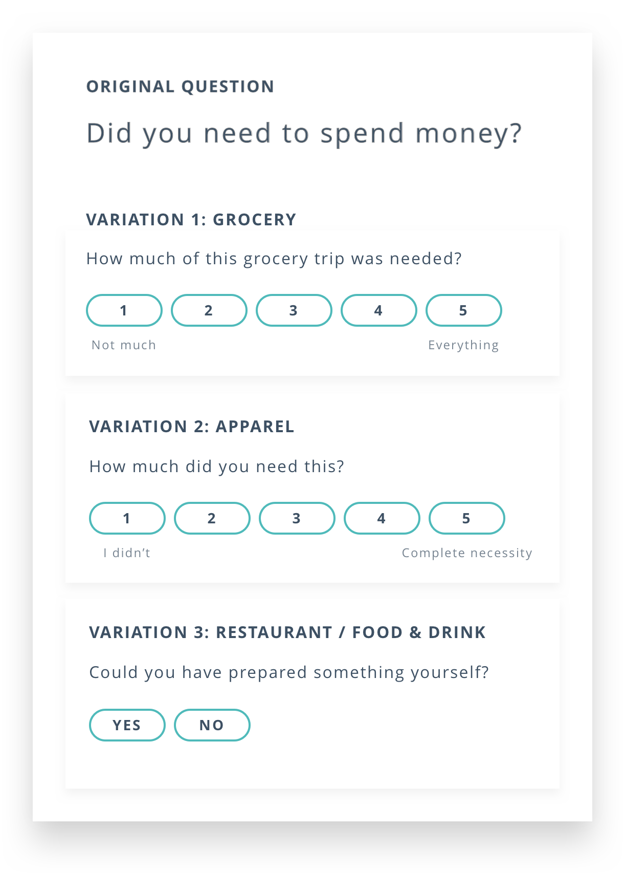

About the project
Each year, a team of 6 high school students is selected and challenged to build and launch a technology company in 10 weeks, culminating in a pitch to investors, VC firms, and Fortune 500 executives. The Zero to Sixty Fellowship was created and supported by Vora Ventures based in Cincinnati, Ohio.
The team: Haley Dues (Product Manager), Megan Cui (Front-end), Jonathon Mangan (Front-end), Nicholas Reichert (Front-end), Torey Hilbert (Back-end)
My role: Product Design & Strategy
Responsibilities: Conducting user research, developing surveys, conducting interviews, establishing the strategic direction, designing and iterating on prototypes, and completing the final visual design.
Timeline: 9 weeks, June - August 2018
Tools: Sketch, InVision, Adobe Illustrator
What problem are we trying to solve?
Who are we solving the problem for?
First, we had to understand what students thought about their spending. As a team, we reflected on our own pain points and concerns about our financial habits. We spent the first week conducting extensive online research. I worked with our PM to draft surveys and develop phone interview questions. I summarized the insights from the interviews and survey responses and created a persona to guide my design decisions.

How do others attempt to solve this problem?
It seemed like there were plenty of personal finance apps in the market. Why weren’t they working? We asked ourselves what we needed, researched the market to find parallels, and looked at competitors to see what they lacked.
Disclaimer: the features highlighted in my analysis are only up to date as of the time of this project (Summer 2018). Recent app updates that resolve the issues I discuss are not reflected.
Since Mint was created in 2006, the platform has grown to have over 20 million users. However, we also found that only 8% of their users are young adults, and 59% stop using Mint after a month of signing up. Why was Mint struggling to capture and retain the attention of young spenders?
Joy’s pastel aesthetic and claims to help users “spend happier” seemed to appeal to a younger college-age audience.
In its efforts to encourage “happier spending”, the app was focused on binary ratings for each spend: a green smiley face or a red frown. While it was an exciting unique approach, rating my spending was never simply happy or sad. How would I categorize an impulsive and financially irresponsible (yet delicious) burger outing I joined when I had packed a lunch? What about filling a prescription? Buying fertilizer for my house plants? Joy oversimplified the rating system as most of my transactions could not simply be labeled as happy or sad, and I struggled to see how this style of categorization would improve my approach toward my spending.
But were there any apps I could look examine that effectively helped people build habits?
I’ve been using NRC for several years. I knew it had been very effective in helping me improve my lifestyle, but I wanted to understand why.

After I started completing Global Challenges, I got several friends to join the app so we could create custom challenges. Every time the app alerted me that a friend started a run, I felt more compelled to get off the couch myself. The challenges channeled our competitive spirit and brought out some snarky trash-talk that pushed us to run more.
Additionally, according to a study on accountability by the American Society of Training and Development (ASTD), individuals who have committed to others that they will complete a goal have a 65% chance of success, which can increase to a 95% chance of success if they have “specific accountability appointments" to check in with someone on their progress.
- Do use some competitive element for motivation. Even tiny badges offer a sense of accomplishment, and competing with friends can be positive peer pressure.
- Don’t bombard users with negative feedback without providing any feasible solutions.
- Do consider that people have different values and priorities regarding our spending which should not be neglected.
- Don’t lose young adult audiences with overwhelming and hyper-specific long-term goals.
- Do only share high-level stats with friends and keep sensitive details hidden from profiles, especially regarding personal finances.
Defining the core functionality
We narrowed our problem statement into two "How Might We" statements:
Hypothesis: How might we teach users what smart spending looks like?
Claim: Teach users how to think about spending by providing feedback each time the user spends money.
Hypothesis: How might we help users stay accountable for making responsible spending decisions?
Claim: Help users leverage their social networks to use social accountability to help each other to spend smarter.
Wireframing
How might we teach users what smart spending looks like?
Our goal was to assign each purchase a Spending Score out of 100. Similar to a credit score, a Spending Score could provide an easy snapshot of one’s spending effectiveness. For example, a Spending Score of 78 could mean that 78 of every 100 dollars is well spent. A numerical rating would also help students visualize improvement over time.
To build the Spending Score algorithm, we decided to ask users to complete a “Check-in” after each purchase. By prompting students to answer a short set of questions reflecting upon each purchase, we hoped to train students to ask themselves important questions before spending their money, thus teaching them how to think about spending.
But what exactly would a check-in entail? What factors determine if a spend is 'smart'? What should students consider when deciding whether to make a purchase?
We interviewed several 17–22-year-old students to share a few recent purchases and explain their thought processes before spending, as well as reflecting on how satisfied they were with each spend.
This research confirmed that users' thought processes around purchase decisions are far more complex than any binary rating. But how could we capture these considerations in a check-in process that was short enough to quickly complete for every purchase, yet not oversimplified like Joy?
After pouring through the massive bank of questions we gathered from our interviews, we analyzed the trends and determined that ultimately how ‘smart’ a spend is comes to 5 main factors:
- Did you need it?
- How much did you want it/was it an impulsive purchase?
- Was it a good value?
- Could you afford it?
- How does it impact your long-term financial goals?
We put tested our questions by evaluating dozens of bank transactions on the 5 factors. This testing revealed two additional considerations:
-

Questions vary significantly by category. Rating the long-term value of a purchase could be relevant when buying a blender, but it would seem trivial for a restaurant meal.
How this changed our product: I decided to keep the 5 core factors consistent but develop customize the wording for questions in each category. -
People have different values toward spending. Some people never purchase anything without at least weeks of research and deal hunting, while others spend more freely but are equally satisfied with their spending. To account for this variation, we would have to understand the users's unique values toward spending to adjust the weights of each check-in question.
- What is your goal minimum amount you aim to keep in your bank account at all times?
- When making a purchase, how important is the need you have for an item? (1–5)
- When making a purchase, how much do you take into consideration how long you have been looking for a similar item? (1–5)
- If you go into a purchase with an amount you are willing to spend on the item, how much do you take that amount into consideration? (1–5)
With that, our backend developer Torey developed an algorithm to score each purchase and used exponential moving averaging to calculate an overall spending score that would update with each new purchase.
My primary design goal was to keep the check-in flow should be short and simple so that a user can easily fit the habit of completing check-ins into their day—before a lecture starts, riding the bus, or right before bed. This focus on habit-building contributed to our broader goal that over time students would internalize the questions and ask themselves before spending money rather than only considering these things after the fact.
How might we help users stay accountable for making responsible spending decisions?
We broke this question into three main social features: Activity Feed, Challenges, and Leaderboard.
The "Money Taboo"
One of our major concerns about building a social finance app is that people tend to avoid talking about money. Just like sex, politics, and religion, it's taboo to talk about money. However, many experts are saying that breaking the silence is essential to improving financial habits.
— Kristin Wong, New York Times
So how might we break the taboo and stimulate open, honest conversations about money?
We were surprised to find that in our initial surveys, a majority of respondents were open to sharing information about their spending with their friends, as long as specific numbers were hidden. This was an encouraging start.
We couldn't break the taboo overnight—we would have to ease users into the openly sharing about their money with their friends. With this, I tried to take advantage of familiarity in my designs by emulating apps that young users are already familiar with—friend feeds in Spotify and Venmo.
Designing the Dashboard
My final challenge was to tie all the spending score and social components together into a dashboard.
Revisiting our hypotheses
Click through my final interactive prototype in InVision!
What did I learn?
Copy is important, especially for a habit-building app.
Many users responded overwhelmingly positively to A/B testing variations with more text and direct reminders of how much they were saving. Incorporating tooltips and How does this work? links helped users understand our algorithms.
Previously, I tried to minimize text following minimalistic design trends, but this project taught me the value of intentionally worded and placed text. I was challenged to incorporate concise text into my visual designs while avoiding clutter.
How to choose what not to do.
We had many great ideas, but I had to be very intentional deciding which features we would incorporate in the MVP and which should wait. I learned to determine which features could bring real value to the app so we wouldn't spread ourselves too thin.
How to balance UX, business goals, and technical constraints.
Working in a cross-functional entrepreneurial team showed me the interplay of design with other team functions. I weighed considerations of business (how could we monetize our app to convince investors that our app was worth their money?) and engineering (what is technically feasible within the timeline?) to create the best possible user experience within those constraints.
The importance of direct communication and collaboration between designers and engineers.
I learned to fight for design details that were essential to good user experience, but to sacrifice some non-essential flourishes to ensure our engineers' time was spent on essential features.
Streamline designer-developer handoff.
I learned how to develop a handoff workflow that accounted for various states and edge cases, saving a lot of back and forth with the engineers.
Never rush through user research.
I should have spent the first few weeks thoroughly researching to understand the problem, but instead, our team felt pressured to rush into development. Looking back, starting with thorough user research would've saved us time in the long run, as it might have saved us some redesigns after user testing and allowed us to start with more direction.
Don't jump into high-fidelity (and don't get distracted by Dribbble).
I was so enthusiastic about using Sketch for the first time and distracted by all the beautiful examples I found on Dribbble that I started on pixel-perfect prototypes without enough iteration and user testing on low-fi mockups. This was a costly mistake—making design changes and iterations when we were already in high-fidelity was much more time-consuming than if I'd stayed in mid-fidelity.
Feedback and outside perspective is essential.
I grew the most as a designer when I understood the value of seeking feedback. At first, I was convinced that nobody should look at my designs until they were done. I finally learned to overcome my fear and realize that nobody was judging me as a designer. Even a quick Slack message to a design mentor or leaning over to consult an engineer released me from analysis paralysis or opened up new avenues.
What it's like to work in a fast-paced startup.
With only 9 weeks to come up with an idea and pitch an MVP, I learned to be scrappy and flexible, as well as how to maintain a healthy team culture within a high-stress environment.
Accessibility in design can't be an afterthought.
I completely neglected considerations about accessibility, dismissing it as non-essential to our MVP. However, as I've grown as a designer, I now know that accessibility can't be tacked on afterwards. If I were to do this project again, accessibility would've been an essential consideration from the start.
- Continue conducting user testing to confirm or challenge design decisions.
- Design MVP prototypes for every platform.
- Continue market research to test establish a strong product-market fit.
- Explore different potential user journeys to understand various user types and use cases.
After our successful pitch, we ended with a valuation of $3 million. Unfortunately, since several members of the team were leaving to start college and other pursuits, we decided not to continue pursuing the project.
Overall, the Zero to Sixty fellowship was an incredible learning experience and I'm incredibly grateful to have been selected for the 2018 cohort. Special thanks to my amazing Zero to Sixty cohort, as well as my mentors Anu Vora, Mahendra Vora, Mickey Mentzer, Mark Olszewski, Justin Couchot, and everyone who supported me while working on this project.